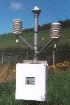
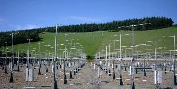
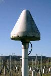

THE NERC MST RADAR FACILITY AT ABERYSTWYTH
THE NERC MST RADAR FACILITY AT ABERYSTWYTH



The NERC MST Radar Facility at Aberystwyth:
- is an atmospheric observatory, which is operated on behalf of the UK's environmental science community
- is located at Capel Dewi (52.42°N, 4.01°W) near Aberystwyth in west Wales (UK)
- operates the NERC Mesosphere-Stratosphere-Troposphere (MST) Radar, the UK's most powerful and most versatile wind-profiling instrument
- the wind data are operationally assimilated by a number of European meteorological services (including the UK's Met Office) for the purposes of numerical weather prediction. This is carried out through the E-PROFILE service.
- operates a number of auxiliary instruments, including those for measuring surface wind, temperature, pressure, humidity, and rainfall
- makes its data open-access (i.e. freely available) through the Centre for Environmental Data Analysis (CEDA)
- helps its users to access, to analyse, and to interpret the data
- hosts instruments on behalf of other groups, including:
- supports field campaigns
- is primarily funded by the Natural Environment Research Council (NERC) through the National Centre for Atmospheric Science (NCAS)
- receives additional funding from the Met Office (for the provision of wind-profile data to the E-PROFILE service)
- is managed by RAL Space department of the STFC Rutherford Appleton Laboratory